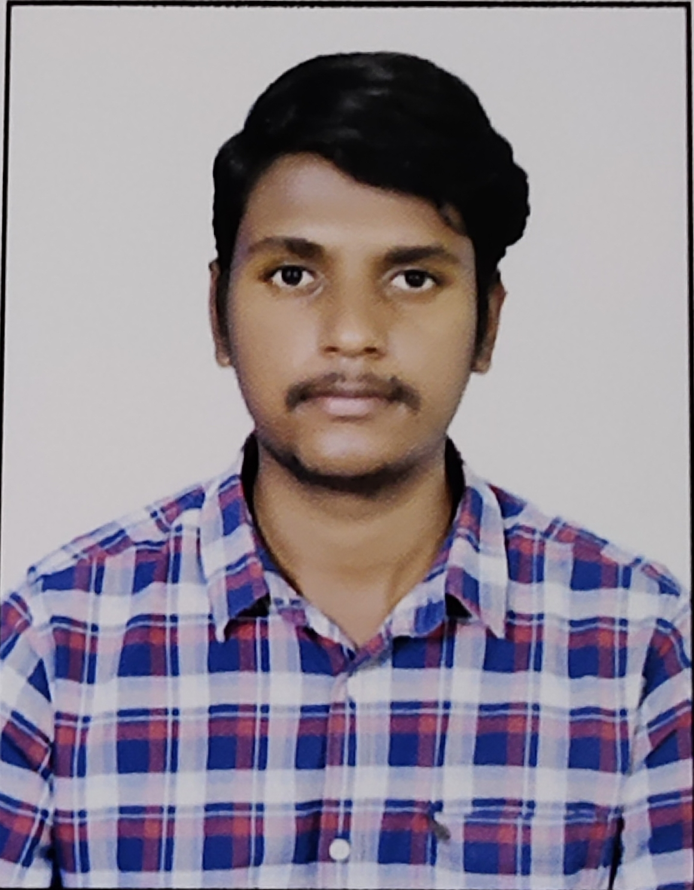

SUMANTH PINNAM

Summary
Hard-working and self-driven web developer with relevant coding and site creation experience. Proactive and dedicated project manager looking for opportunities to pursue technology milestones while contributing to a company's business growth
Education
- Bachelor of Technology in Cyber Security at Sreenidhi Institute of Science and Technology
- CGPA:8.52
- Expected Year of Completion:May 2025
- Completed my 12th in MPC stream at Harvest Public school CBSE,Khammam
- Completed my 10th in CBSE at Harvest Public school CBSE,Khammam
Skills:
Technical